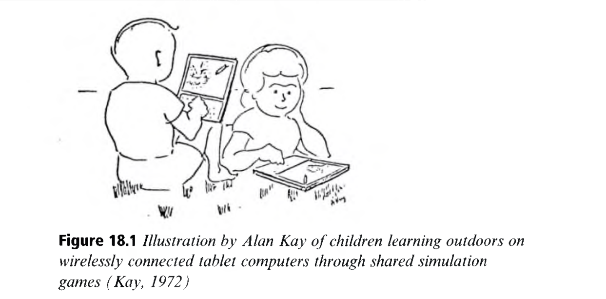
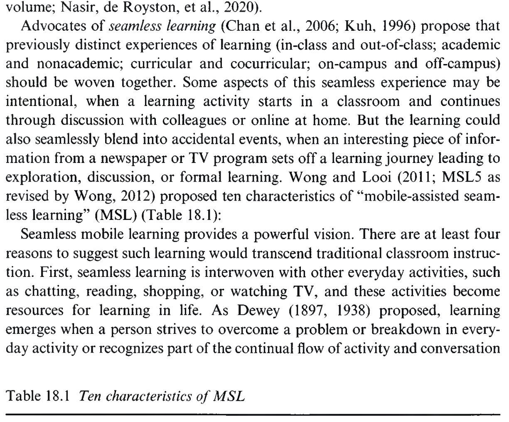
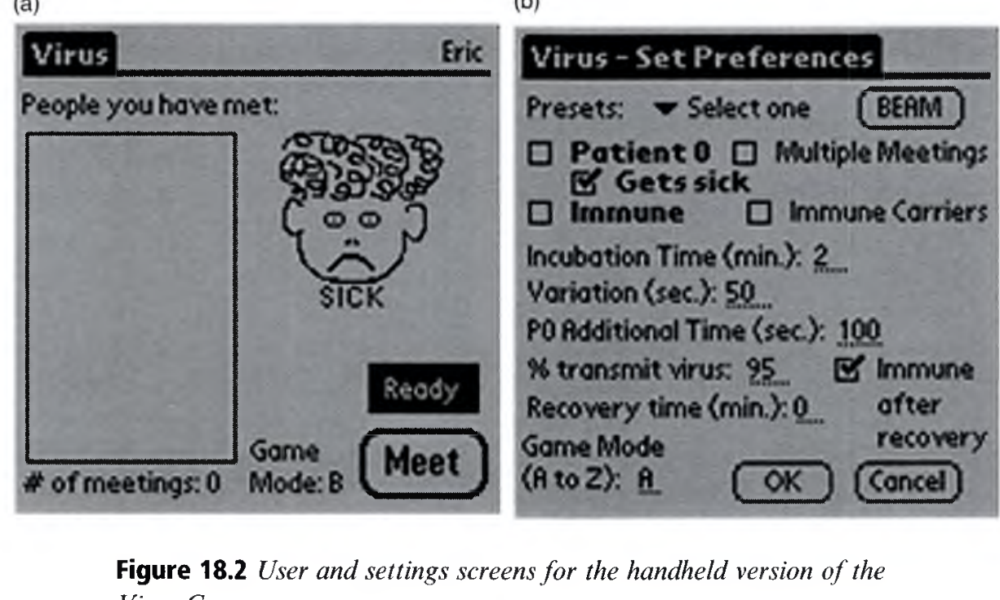
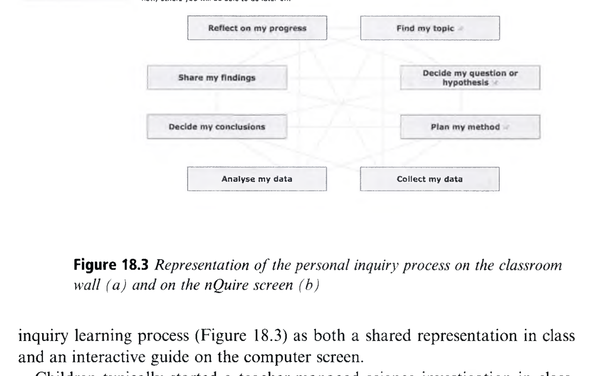

Mobile Learning
모바일 학습: 다이나북의 비전에서 끊김 없는 유비쿼터스 개인 탐구로
👥 저자 및 출처
Roy Pea (Stanford University)
Mike Sharples (The Open University)
The Cambridge Handbook of the Learning Sciences (3rd ed.), Chapter 18
🎯 챕터 핵심 아젠다
- 다이나북 50년의 예언: 앨런 케이의 비전과 현대 모바일 무봉제 학습
- 무봉제 학습 (MSL) 10대 차원: 형식/비형식, 시공간 초월, 물리-디지털 융합
- 2대 대표 실천: 참여형 바이러스 시뮬레이션 & 야외 개인 탐구 프로젝트
- 대화 학습 이론 (Conversation Theory): 맥락을 스스로 직조하는 학습자 에이전시
🎯 강의 목표 및 핵심 맥락
모바일 학습이 단순한 기기 휴대가 아니라, 학습자가 삶의 시공간과 맥락을 넘나들며 끊김 없이 지식을 탐구하는 '무봉제 학습(Seamless Learning)'임을 이해합니다.
📖 원문 심층 학술 해설
스탠퍼드 대학교 로이 피 교수와 영국 오픈 유니버시티 마이크 샤플스 교수는 모바일 학습과 CSCL 분야의 세계적 최고 권위자들입니다.
💡 수업/세미나 진행 팁 & 질문 가이드
"스마트폰이 교실에서 주의 분산의 주범인가, 아니면 역사상 가장 강력한 개인 학습 연구실인가?"를 질문하며 토론을 열어보세요.
50년의 예언: 앨런 케이의 다이나북(DynaBook, 1972)
모든 연령의 어린이를 위한 개인용 무선 포터블 컴퓨터의 탄생 (Figure 18.1)
📜 앨런 케이(Alan Kay)의 1972년 스케치
- 아이들이 야외 잔디밭에서 무선 태블릿을 들고 시뮬레이션을 주고받으며 학습
- "책처럼 가볍고, 연필처럼 유연하며, 우주 전체를 시뮬레이션할 수 있는 메타 매체"
- 본질적 전환: "기기가 이동하는 것이 아니라, 학습자가 이동하며 세계와 대화하는 것"

🎯 강의 목표 및 핵심 맥락
원서 Figure 18.1의 다이나북 역사적 스케치를 통해 모바일 학습의 철학적 기원과 현대 스마트 기기의 뿌리를 규명합니다.
📖 원문 심층 학술 해설
앨런 케이의 비전은 50년이 지난 오늘날 iPad와 스마트폰으로 실현되었습니다. 진정한 모바일 학습은 수동적 영상 시청이 아닌 능동적 동적 모델링입니다.
💡 수업/세미나 진행 팁 & 질문 가이드
1972년의 다이나북 비전 중 현대 스마트폰이 이미 달성한 것과 아직 미진한 교육적 기능을 비교해 보세요.
모바일 끊김 없는 학습(MSL)의 10대 특성 차원
체치-체 룽(Chee-Kit Looi) 교수의 Mobile Seamless Learning 프레임워크 (Table 18.1)
1. 형식 & 비형식 학습 결합
교실 수업과 가정, 박물관, 야외 탐구의 경계 허물기
2. 개인 & 사회적 협력 연결
1인 1기기 개별 탐구와 클라우드 기반 모둠 협동의 동기화
3. 시공간 초월 & 물리-디지털 융합
언제 어디서나 실제 사물 측정 데이터와 가상 모델의 결합

🎯 강의 목표 및 핵심 맥락
원서 Table 18.1의 무봉제 모바일 학습(MSL: Mobile Seamless Learning) 10대 차원의 전체 구조를 조망합니다.
📖 원문 심층 학술 해설
'무봉제(Seamless)'란 학습자가 장소나 기기가 바뀌어도 인지적 흐름이 끊기지 않고 연속적으로 학습 과제를 이어가는 상태를 의미합니다.
💡 수업/세미나 진행 팁 & 질문 가이드
학생들이 학교에서 시작한 프로젝트를 집에서 스마트폰과 PC로 이어갈 때 겪는 기술적/제도적 단절을 논의하세요.
형식-비형식 학습의 결합과 24/7 전생애적 학습 궤적
학교 교실의 8시간을 넘어 일상생활 24시간 전체를 배움의 장으로 확장
🏫 교실(형식 학습)의 한계
- 45분 단위의 파편화된 수업 시간표
- 교과서 속 박제된 예시와 일상 삶의 괴리
🌍 모바일(무봉제 학습)의 브리지
- 교실 ➔ 야외: 교실에서 배운 식물 광합성을 공원에서 직접 잎 사진을 찍고 센서로 측정
- 야외 ➔ 가정: 수집한 데이터를 저녁에 집에서 태블릿으로 분석하고 포럼에 보고서 게시
- 가정 ➔ 교실: 다음 날 아침 교실 전자칠판에 전교생 데이터가 통합 시각화
🎯 강의 목표 및 핵심 맥락
모바일 기기가 어떻게 학교(Formal)와 일상(Informal)의 장벽을 허물고 24시간 연속 학습 궤적을 만드는지 설명합니다.
📖 원문 심층 학술 해설
루이(Looi et al., 2010)의 싱가포르 초등학교 종단 연구: 1:1 모바일 학습 환경을 구축한 학급이 1년 후 과학 탐구력과 자기주도학습력에서 압도적 성장을 보였습니다.
💡 수업/세미나 진행 팁 & 질문 가이드
가정통신문 앱을 넘어, 학생의 탐구 데이터를 부모와 교사가 함께 공유하는 진정한 모바일 러닝 시나리오를 구상해 보세요.
참여형 시뮬레이션: 바이러스 전파 게임 (Figure 18.2)
콜린스, 피, 로셸(Roschelle & Pea, 2002)의 핸드헬드 분산 인지 실험
🦠 바이러스 게임 메커니즘
- 모든 학생이 손에 모바일 기기를 쥐고 교실을 돌아다니며 친구와 가상 악수(근거리 통신)
- 누군가 1명이 보이지 않는 바이러스 보균자(Patient Zero)로 지정됨
- 기기 화면에 감염 여부(발열/증상)가 점진적으로 뜨면서 역학 조사 시작

🎯 강의 목표 및 핵심 맥락
원서 Figure 18.2의 바이러스 참여형 시뮬레이션을 통해 모바일 기기를 활용한 교실 내 협력적 복잡계 탐구 모델을 분석합니다.
📖 원문 심층 학술 해설
학생들은 수동적으로 지수함수 그래프를 보는 대신, 자신이 직접 전염병 전파 네트워크의 한 노드(Node)가 되어 감염 경로를 추적합니다.
💡 수업/세미나 진행 팁 & 질문 가이드
코로나19 팬데믹 역학 조사와 이 시뮬레이션을 연결하여 학생들의 데이터 문해력을 기르는 방안을 논의하세요.
학생 자신이 에이전트가 되는 참여형 시뮬레이션
거시적 집단 패턴(Macro)과 미시적 개인 행동(Micro)의 연결
🐜 1. 일인칭 시점의 에이전트 경험
- 개별 학생은 기기를 통해 오직 자신의 상태(체온, 이동 경로)만 제어
- 미시적 상호작용 규칙(가까이 가면 감염 확률 50%)을 온몸으로 체득
📊 2. 교실 전체 스크린의 거시적 창발(Emergence)
- 교실 앞 전자칠판에 실시간으로 감염자 수 R(t) 곡선과 네트워크 토폴로지 렌더링
- "내 작은 행동 하나가 전체 교실의 방역 붕괴를 초래했다!"는 시스템 사고 획득
🎯 강의 목표 및 핵심 맥락
참여형 시뮬레이션이 복잡계 과학의 핵심인 '미시 규칙과 거시 창발(Emergence)'을 어떻게 직관화하는지 설명합니다.
📖 원문 심층 학술 해설
윌렌스키와 레스닉(Wilensky & Resnick)의 StarLogo 연구와 맞닿아 있으며, 모바일 기기는 교실 전체를 분산 슈퍼컴퓨터로 변환합니다.
💡 수업/세미나 진행 팁 & 질문 가이드
교통 체증 시뮬레이션이나 주식 시장 가격 형성 시뮬레이션으로의 확장 방안을 토론하세요.
개인 탐구(Personal Inquiry) 프로젝트: 야외 과학 센싱
마이크 샤플스(Mike Sharples) 연구팀의 nQuire 모바일 탐구 툴킷 (Figure 18.3)
🌍 탐구 주제 및 활동 프로세스
- 프로젝트 주제: "학교 운동장과 도로변 소음이 조류 서식지에 미치는 영향"
- 야외 센싱: 태블릿 마이크와 센서로 위치별 데시벨(dB) 측정, 조류 출현 사진 촬영, GPS 좌표 자동 기록
- 데이터 통합: 야외에서 업로드한 데이터가 nQuire 플랫폼 지도 위에 실시간 히트맵으로 생성

🎯 강의 목표 및 핵심 맥락
원서 Figure 18.3의 nQuire 개인 탐구(Personal Inquiry) 프로세스를 통해 과학자처럼 탐구하는 모바일 학습 모델을 분석합니다.
📖 원문 심층 학술 해설
학생들은 교사가 정해준 정답을 외우는 것이 아니라, 스스로 가설을 세우고 실제 데이터를 수집·시각화하여 결론을 도출합니다.
💡 수업/세미나 진행 팁 & 질문 가이드
스마트폰 내장 센서(조도, 소음, 가속도계, 기압계)를 과학 수업에 활용할 수 있는 아이디어를 모아보세요.
탐구 맵(Inquiry Map)과 실시간 적응형 비계
샤플스의 8단계 순환형 탐구 모델과 동기화 아키텍처
1. 질문 발견
호기심 기반 탐구 질문 및 연구 가설 설정
2. 방법 설계
어떤 센서로 어디서 데이터를 모을지 계획
3. 야외 수집
모바일 기기로 사진, 소음, 위치 측정
4. 분석 & 결론
히트맵 그래프 분석 및 가설 검증 보고서 공유
🎯 강의 목표 및 핵심 맥락
nQuire 소프트웨어가 제공하는 8단계 탐구 맵의 단계적 비계(Scaffolding) 구조를 설명합니다.
📖 원문 심층 학술 해설
탐구 과정이 모바일 화면에 시각적 맵으로 표시되므로, 학생은 자신이 지금 어떤 단계에 있고 다음에 무엇을 해야 하는지 메타인지적으로 모니터링할 수 있습니다.
💡 수업/세미나 진행 팁 & 질문 가이드
과학 전람회나 자유탐구 과제에 nQuire 방식의 탐구 맵을 도입했을 때의 장점을 논의하세요.
샤플스의 대화 학습 이론 (Conversation Theory)
고든 패스크(Gordon Pask)의 대화 이론을 모바일 환경으로 재정립 (Figure 18.4)
💬 3대 대화 층위 (Sharples, 2002)
- 자신과의 내적 대화: 수집한 데이터를 보며 자신의 선개념과 반성적 성찰
- 동료 및 교사와의 사회적 대화: 메신저와 공유 보드를 통한 가설 검증 토론
- 테크놀로지 시스템과의 상호작용 대화: 시뮬레이션 파라미터를 바꾸며 즉각적 피드백 수신
🎯 모바일 기기의 역할
기기는 단순한 화면이 아니라, 3가지 대화 층위를 시공간 제약 없이 매개하는 지능형 의사소통 오케스트레이터
🎯 강의 목표 및 핵심 맥락
샤플스 교수가 정립한 '모바일 대화 학습 이론(Conversation Theory of Mobile Learning)'의 핵심 구조를 분석합니다.
📖 원문 심층 학술 해설
배움이란 본질적으로 나와 타인, 그리고 시스템과의 끊임없는 '대화와 합의(Reaching an Agreement)' 과정이며, 모바일은 이 대화의 연속성을 보장합니다.
💡 수업/세미나 진행 팁 & 질문 가이드
생성형 AI 챗봇과의 대화가 샤플스의 대화 이론 3대 층위와 어떻게 결합될 수 있는지 토론하세요.
맥락의 생성: 학습자가 스스로 직조하는 배움의 맥락
맥락은 고정된 물리적 장소가 아니라, 학습자의 탐구 활동을 통해 창조되는 것
🚫 고전적 맥락관 (Context as Container)
교실, 집, 도서관을 학생이 들어가는 고정된 물리적 상자(컨테이너)로 취급
✨ 모바일 학습의 동적 맥락관 (Context as Synthesized)
- 지하철 안에서도 모바일 기기를 열고 논문을 읽으면 그 순간 그곳이 '연구실'이 됨
- 학습자는 관심사, 도구, 동료를 결합하여 스스로 맥락을 창출(Synthesize Context)하는 주체적 행위자(Agent)
🎯 강의 목표 및 핵심 맥락
학습과학에서 '맥락(Context)'의 정의를 정적인 장소에서 '학습자가 창조하는 동적 상태'로 전환하는 철학적 도약을 설명합니다.
📖 원문 심층 학술 해설
듀이(Dewey)의 상황주의 철학: 학습자는 환경에 수동적으로 반응하는 존재가 아니라, 모바일 도구를 통해 환경과 능동적으로 관계를 맺습니다.
💡 수업/세미나 진행 팁 & 질문 가이드
자신이 스마트폰을 통해 일상 공간(카페, 버스 등)을 학습 맥락으로 변환시켰던 경험을 나누어 보세요.
차세대 모바일 학습: 마이크로 러닝과 개인화 AI 튜터
스마트워치, 지능형 푸시 알림, 대형 언어 모델(LLM)의 결합
⏱️ 마이크로 러닝 (Micro-learning)
출퇴근 시간 3분 단위로 단어, 코딩 퀴즈를 푸는 초단기 마이크로 콘텐츠
🤖 모바일 AI 소크라틱 튜터
학생이 야외에서 찍은 사진을 보고 실시간으로 질문을 던져주는 멀티모달 AI
⌚ 웨어러블 바이오피드백
스마트워치 심박수로 스트레스·몰입도를 감지하여 적응형 휴식 권고
🎯 강의 목표 및 핵심 맥락
AI와 웨어러블 디바이스가 결합된 차세대 모바일 학습의 최신 트렌드를 전망합니다.
📖 원문 심층 학술 해설
스마트폰 카메라로 꽃을 찍으면 "이 꽃의 암술과 수술 구조는 어떻게 생겼을까?"를 되물어주는 소크라테스식 AI 튜터링이 가능해졌습니다.
💡 수업/세미나 진행 팁 & 질문 가이드
ChatGPT 모바일 보이스 모드를 활용한 1:1 회화/토론 학습의 장단점을 분석해 보세요.
스마트폰 주의 분산 극복과 공평한 디지털 포용
모바일 기기의 중독적 유혹을 넘어 생산적 학습 도구로 전환하는 정책
⚠️ 스마트폰 과몰입과 2차 디지털 격차
- SNS, 숏폼 비디오, 게임 알림으로 인한 주의 집중력 저하
- 기기 보유 여부가 아니라 '기기를 생산적으로 활용하는 역량'의 격차(Usage Divide)
🛡️ 자기조절학습(SRL) 비계와 공공 정책
- 앱 사용 시간 모니터링 및 방해 금지 모드의 메타인지적 훈련
- 저소득층 학생을 위한 공공 와이파이 및 1인 1스마트 기기 보급 복지
🎯 강의 목표 및 핵심 맥락
모바일 기기의 교실 내 허용을 둘러싼 사회적 논쟁과, 학생들의 자기조절학습(SRL) 역량 강화 방안을 다룹니다.
📖 원문 심층 학술 해설
단순한 '스마트폰 압수'는 능동적 디지털 시민성 함양을 가로막습니다. 기기를 지혜롭게 제어하는 자기조절 훈련이 필수입니다.
💡 수업/세미나 진행 팁 & 질문 가이드
학교 내 스마트폰 전면 수거 정책과 1:1 수업 활용 정책 중 어느 방향이 더 교육적인지 찬반 토론하세요.
앱 인벤터(App Inventor)와 모바일 앱 창작 교육
소비자(Consumer)에서 모바일 솔루션 창작자(Creator)로의 대전환
📱 MIT 앱 인벤터 (App Inventor, Hal Abelson)
- 초·중등 학생도 블록 코딩으로 자신의 스마트폰에서 실제 구동되는 네이티브 앱 제작
- GPS 센서, 카메라, 가속도계, 블루투스 통신 블록을 손쉽게 결합
🎯 사회 혁신 문제 해결 프로젝트
- 시각장애인 안내 앱: 카메라로 사물을 인식해 음성으로 읽어주는 앱 코딩
- 우리 동네 쓰레기 분리수거 맵: 학생들이 사진을 찍어 위치를 공유하는 공공 서비스 제작
🎯 강의 목표 및 핵심 맥락
모바일 기기를 단순한 소비 수단에서 컴퓨팅 사고력을 발휘하는 '창작의 플랫폼'으로 변환시키는 교육 모델을 다룹니다.
📖 원문 심층 학술 해설
앱 인벤터는 학생들이 자신의 손안에 있는 기기를 직접 프로그래밍함으로써 막강한 기술적 자기효능감(Empowerment)을 얻게 합니다.
💡 수업/세미나 진행 팁 & 질문 가이드
학생들이 우리 학교의 실생활 문제를 해결하기 위해 어떤 모바일 앱을 기획할 수 있을지 아이디어를 모아보세요.
Part III 테크놀로지 대단원 결론: 기술은 맥락을 잇는 다리
학습과학이 밝혀낸 5대 차세대 테크놀로지 생태계 완성
Ch 14. 비디오 게임
몰입형 참여 아키텍처와 은밀한 평가
Ch 15. 체화 설계
감각운동 스키마와 기호 매개 시퀀스
Ch 16. 탠저블 교구
물질성, 계산적 공예, 전신 인터랙션
Ch 17. 증강현실
비가시적 개념 시각화와 공동 시각 기반
Ch 18. 모바일 러닝
시공간 초월 무봉제 탐구와 학습자 에이전시
🎯 강의 목표 및 핵심 맥락
Part III (Learning with Technology: Ch 14~18) 5개 장의 대단원 결론을 집대성합니다.
📖 원문 심층 학술 해설
테크놀로지는 인간을 대체하는 것이 아니라, 인간의 신체, 사물, 사회적 대화, 삶의 맥락을 가장 유기적으로 연결해 주는 강력한 인지적 비계입니다.
💡 수업/세미나 진행 팁 & 질문 가이드
5가지 기술 중 여러분의 교육 환경에 가장 먼저 융합하고 싶은 기술 조합을 선정해 보세요.
다음 여정: Part IV 함께 배우기 & Chapter 19 지식 구축
Part IV: Learning Together & Chapter 19: Knowledge Building (Marlene Scardamalia & Carl Bereiter)
🤝 Part IV 협력 학습의 대서사
- Ch 19 지식 구축 (Knowledge Building): 아이디어를 개선 가능한 객체로 다루는 12대 원리
- Ch 20 CSCL: 컴퓨터 매개 협력 학습의 상호작용 메커니즘과 스크립트
- Ch 21 논쟁 학습 (Arguing to Learn): 툴민 논증 구도와 담화 분석
- Ch 22 박물관 비형식 학습: 자유선택 학습과 가족 대화
🚀 개인 인지에서 '집단 지성'으로의 전환
혼자 배우는 뇌에서 함께 아이디어를 창출하고 집단적 지식을 진화시키는 사회문화적 학습과학의 정수로 진입합니다.
🎯 강의 목표 및 핵심 맥락
Part III 테크놀로지를 마치고, Part IV (Learning Together) 및 Chapter 19(Knowledge Building)로의 거대한 전환을 예고합니다.
📖 원문 심층 학술 해설
지식 구축 이론(Knowledge Building)의 창시자 말린 스카다말리아와 칼 베라이터 교수의 고전적 명저로 이어집니다.
💡 수업/세미나 진행 팁 & 질문 가이드
Part IV를 기대하며 본 강의 슬라이드를 마칩니다.